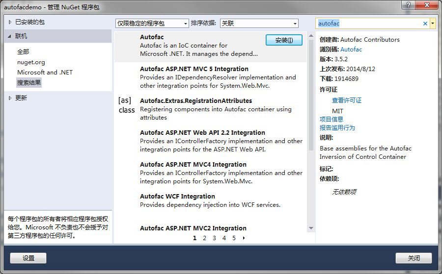
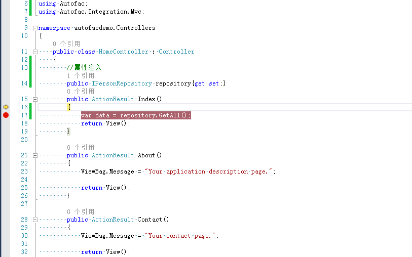

一、前言
Autofac是.NET领域最为流行的IOC框架之一，微软的Orchad开源程序使用的就是Autofac，Nopcommerce开源程序也是用的Autofac。
Orchad和Nopcommerce在用Autofac的时候进行封装，看过源码的都知道Autafac使用简单，功能强大。
建议下载Orchad和Nopcommerce学习下源码：附上下载地址
http://www.orchardproject.net/
和其他IOC对比：
Unity：微软patterns&practicest团队开发的IOC依赖注入框架，支持AOP横切关注点。
MEF（Managed Extensibility Framework）：是一个用来扩展.NET应用程序的框架，可开发插件系统。
Spring.NET：依赖注入、面向方面编程(AOP)、数据访问抽象,、以及ASP.NET集成。
PostSharp：实现静态AOP横切关注点，使用简单，功能强大，对目标拦截的方法无需任何改动。
Autofac：最流行的依赖注入和IOC框架，轻量且高性能，对项目代码几乎无任何侵入性。
下面介绍Autofac的使用
二、Autofac使用
新建一个mvc的项目，使用nuget安装Autofac，需要安装Autofac和Autofac ASP.NET MVC5 Intergration

安装完成后引用里面就多了Autofac.dll和Autofac.Intergration.MVC,如果是在webApi里使用Autofac需要安装Autofac ASP.NET Web API2.2 Intergration 才可以。
新建一个person实体类

public class Person
{
public int Id { get; set; }
public string Name { get; set; }
public int Age { get; set; }
public string Address { get; set; }
}新建一个person仓储接口
public interface IPersonRepository
{
IEnumerable<Person> GetAll();
Person Get(int id);
Person Add(Person item);
bool Update(Person item);
bool Delete(int id);
}新建实现
public class PersonRepository : IPersonRepository
{
List<Person> person = new List<Person>();
public PersonRepository()
{
Add(new Person { Id = 1, Name = "joye.net1", Age = 18, Address = "中国上海" });
Add(new Person { Id = 2, Name = "joye.net2", Age = 18, Address = "中国上海" });
Add(new Person { Id = 3, Name = "joye.net3", Age = 18, Address = "中国上海" });
}
public IEnumerable<Person> GetAll()
{
return person;
}
public Person Get(int id)
{
return person.Find(p => p.Id == id);
}
public Person Add(Person item)
{
if (item == null)
{
throw new ArgumentNullException("item");
}
person.Add(item);
return item;
}
public bool Update(Person item)
{
if (item == null)
{
throw new ArgumentNullException("item");
}
int index = person.FindIndex(p => p.Id == item.Id);
if (index == -1)
{
return false;
}
person.RemoveAt(index);
person.Add(item);
return true;
}
public bool Delete(int id)
{
person.RemoveAll(p => p.Id == id);
return true;
}
}Global属性注入
public class MvcApplication : System.Web.HttpApplication
{
private void SetupResolveRules(ContainerBuilder builder)
{
builder.RegisterType<PersonRepository>().As<IPersonRepository>();
}
protected void Application_Start()
{
var builder = new ContainerBuilder();
SetupResolveRules(builder);
builder.RegisterControllers(Assembly.GetExecutingAssembly()).PropertiesAutowired();
var container = builder.Build();
DependencyResolver.SetResolver(new AutofacDependencyResolver(container));
AreaRegistration.RegisterAllAreas();
FilterConfig.RegisterGlobalFilters(GlobalFilters.Filters);
RouteConfig.RegisterRoutes(RouteTable.Routes);
BundleConfig.RegisterBundles(BundleTable.Bundles);
}
}最好获取数据结果；

三、总结
文中只是给出了一个简单的注入实现，剩下的可以自己去研究下，构造函数注入，方法注入
泛型注入，所有程序集注入，都可以看下，
也可以把文章开头的两个开源的项目下载下来研究里面的Autofac注入方式。